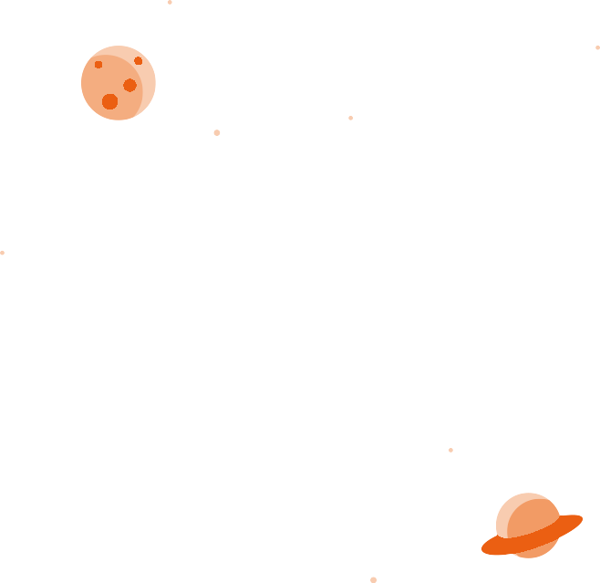

<section class="error-page">
    <div class="container">
        <div class="error-page__content">
            <div class="error-page__404"></div><!-- 404-image -->
            <div class="error-page__shape1 wow slideInDown" data-wow-delay="300ms"></div><!-- 404-image -->
            <div class="error-page__shape2 wow slideInUp" data-wow-delay="400ms"></div><!-- 404-image -->
            <h4 class="error-page__title">Oops! page not found</h4><!-- 404-title -->
            <p class="error-page__text">The page you are looking for is not exist.</p><!-- 404-content -->
            <form class="error-page__form">
                <div class="error-page__form-input">
                    <input type="search" placeholder="Search here">
                    <button type="submit"><i class="icon-magnifying-glass"></i></button>
                </div>
            </form><!-- 404-search-form -->
            <a href="index.html" class="nisoz-btn">
                <span class="nisoz-btn__shape"></span><span class="nisoz-btn__shape"></span><span class="nisoz-btn__shape"></span><span class="nisoz-btn__shape"></span>
                <span class="nisoz-btn__text">Back to Home</span>
            </a><!-- 404-btn -->
        </div><!-- 404-info -->
    </div>
</section>